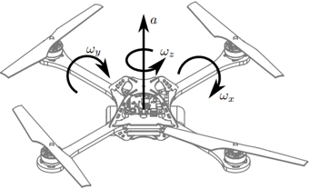

Quadrotor
The Quadrotor benchmark is a model of a flying drone with four rotors.

using ClosedLoopReachability
import OrdinaryDiffEq, Plots, DisplayAs
using ReachabilityBase.Arrays: SingleEntryVector
using ReachabilityBase.CurrentPath: @current_path
using ReachabilityBase.Timing: print_timed
using Plots: plot, plot!Model
There are 12 state variables $(x_1, …, x_{12})$, where $(x_1, x_2)$ is the inertial position (north and east), $x_3$ is the altitude, $(x_4, x_5, x_6)$ is the velocity (longitudinal, lateral, vertical), $(x_7, x_8, x_9)$ is the (roll, pitch, yaw) angle, and $(x_{10}, x_{11}, x_{12})$ is the (roll, pitch, yaw) rate. The control inputs $(u_1, u_2, u_3)$ represent the torque. For more details we refer to Beard [Bea08].
vars_idx = Dict(:states => 1:12, :controls => 13:15)
const g = 9.81
const m = 1.4
const Jx = 0.054
const Jy = 0.054
const Jz = 0.104
const Cyzx = (Jy - Jz) / Jx
const Czxy = (Jz - Jx) / Jy
const Cxyz = (Jx - Jy) / Jz
const τψ = 0.0
const Tz = τψ / Jz;The differential equations can be simplified using knowledge about the model constants:
@taylorize function Quadrotor!(dx, x, p, t)
x₁, x₂, x₃, x₄, x₅, x₆, x₇, x₈, x₉, x₁₀, x₁₁, x₁₂, u₁, u₂, u₃ = x
F₁ = g + u₁ / m
Tx = u₂ / Jx
Ty = u₃ / Jy
sx7 = sin(x₇)
cx7 = cos(x₇)
sx8 = sin(x₈)
cx8 = cos(x₈)
sx9 = sin(x₉)
cx9 = cos(x₉)
sx7sx9 = sx7 * sx9
sx7cx9 = sx7 * cx9
cx7sx9 = cx7 * sx9
cx7cx9 = cx7 * cx9
sx7cx8 = sx7 * cx8
cx7cx8 = cx7 * cx8
sx7_cx8 = sx7 / cx8
x4cx8 = cx8 * x₄
xdot9 = sx7_cx8 * x₁₁
dx[1] = (cx9 * x4cx8 + (sx7cx9 * sx8 - cx7sx9) * x₅) + (cx7cx9 * sx8 + sx7sx9) * x₆
dx[2] = (sx9 * x4cx8 + (sx7sx9 * sx8 + cx7cx9) * x₅) + (cx7sx9 * sx8 - sx7cx9) * x₆
dx[3] = (sx8 * x₄ - sx7cx8 * x₅) - cx7cx8 * x₆
dx[4] = -x₁₁ * x₆ - g * sx8
dx[5] = x₁₀ * x₆ + g * sx7cx8
dx[6] = (x₁₁ * x₄ - x₁₀ * x₅) + (g * cx7cx8 - F₁)
dx[7] = x₁₀ + sx8 * xdot9
dx[8] = cx7 * x₁₁
dx[9] = xdot9
dx[10] = Tx
dx[11] = Ty
dx[12] = zero(x[12])
dx[13] = zero(u₁)
dx[14] = zero(u₂)
dx[15] = zero(u₃)
return dx
end;We are given a neural-network controller with 3 hidden layers of 64 neurons each and sigmoid activations. The controller has 12 inputs (the state variables) and 3 outputs ($u_1, u_2, u_3$).
path = @current_path("Quadrotor", "Quadrotor_controller.polar")
controller = read_POLAR(path);The control period is 0.1 time units.
period = 0.1;Specification
We consider a smaller uncertain initial condition than originally proposed; specifically, the set is a hyperrectangle with 1% of the original radius:
r = [0.4, 0.4, 0.4, 0.4, 0.4, 0.4, 0, 0, 0, 0, 0, 0] # original radius
X₀ = Hyperrectangle(zeros(12), 0.01 * r)
U₀ = ZeroSet(3);The control problem is:
ivp = @ivp(x' = Quadrotor!(x), dim: 15, x(0) ∈ X₀ × U₀)
prob = ControlledPlant(ivp, controller, vars_idx, period);The specification is to stabilize the attitude $x_3$ to the goal region $[0.94, 1.06]$ until a time horizon of 50 time units. A sufficient condition for guaranteed verification is to overapproximate the result at the end with a hyperrectangle.
goal_states = HPolyhedron([HalfSpace(SingleEntryVector(3, 15, -1.0), -0.94),
HalfSpace(SingleEntryVector(3, 15, 1.0), 1.06)])
predicate_set(R) = overapproximate(R, Hyperrectangle) ⊆ goal_states
predicate(sol) = all(predicate_set(F[end]) for F in sol if T ∈ tspan(F))
T = 5.0
T_warmup = 2 * period; # shorter time horizon for warm-up runAnalysis
To enclose the continuous dynamics, we use a Taylor-model-based algorithm:
algorithm_plant = TMJets(abstol=1e-1, orderT=3, orderQ=1);To propagate sets through the neural network, we use the DeepZ algorithm:
algorithm_controller = DeepZ();The verification benchmark is given below:
function benchmark(; T=T, silent::Bool=false)
# Solve the controlled system:
silent || println("Flowpipe construction:")
res = @timed solve(prob; T=T, algorithm_controller=algorithm_controller,
algorithm_plant=algorithm_plant)
sol = res.value
silent || print_timed(res)
# Check the property:
silent || println("Property checking:")
res = @timed predicate(sol)
silent || print_timed(res)
if res.value
silent || println(" The property is satisfied.")
result = "verified"
else
silent || println(" The property may be violated.")
result = "not verified"
end
return sol, result
end;Run the verification benchmark and compute some simulations:
benchmark(T=T_warmup, silent=true) # warm-up
res = @timed benchmark(T=T) # benchmark
sol, result = res.value
@assert (result == "verified") "verification failed"
println("Total analysis time:")
print_timed(res)
println("Simulation:")
res = @timed simulate(prob; T=T, trajectories=1, include_vertices=false)
sim = res.value
print_timed(res);Flowpipe construction:
9.726485 seconds (64.55 M allocations: 4.261 GiB, 19.31% gc time)
Property checking:
0.322123 seconds (692.12 k allocations: 34.478 MiB, 0.00% compilation time)
The property is satisfied.
Total analysis time:
10.052526 seconds (65.24 M allocations: 4.295 GiB, 18.69% gc time, 0.00% compilation time)
Simulation:
0.645352 seconds (2.43 M allocations: 121.356 MiB, 5.00% gc time, 0.00% compilation time)Results
Script to plot the results:
function plot_helper(vars)
goal_states_projected = cartesian_product(Interval(0, T),
project(goal_states, [vars[2]]))
fig = plot()
plot!(fig, goal_states_projected; color=:cyan, lab="goal")
plot!(fig, sol; vars=vars, color=:yellow, lw=0, alpha=1, lab="")
plot_simulation!(fig, sim; vars=vars, color=:black, lab="")
return fig
end;Plot the results:
vars = (0, 3)
fig = plot_helper(vars)
plot!(fig; xlab="t", ylab="x₃")
# Plots.savefig(fig, "Quadrotor.png") # command to save the plot to a file
fig = DisplayAs.Text(DisplayAs.PNG(fig))